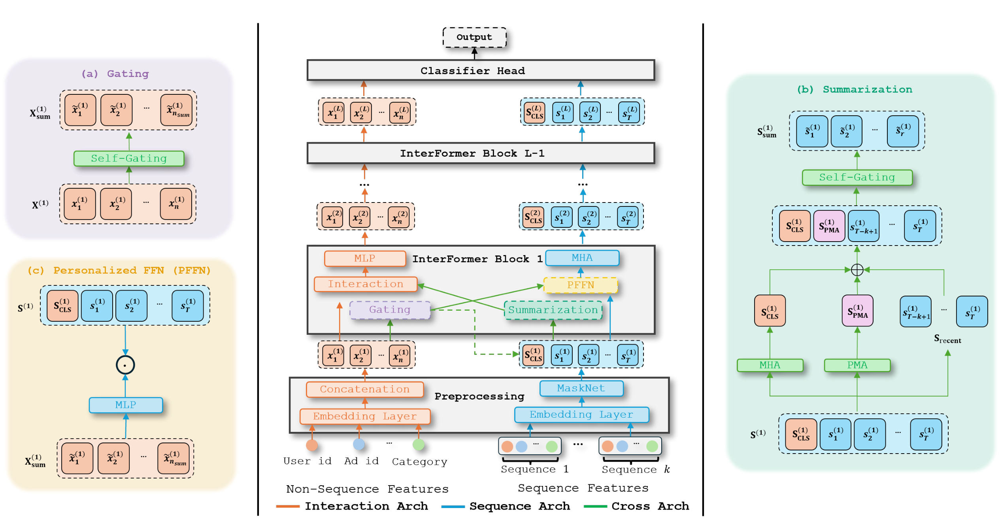
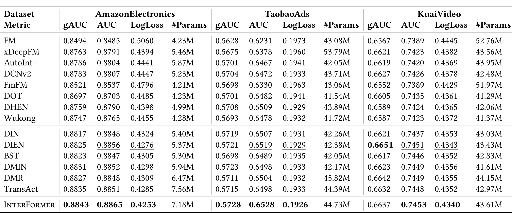
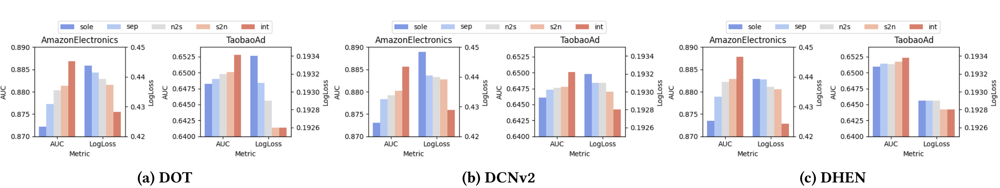
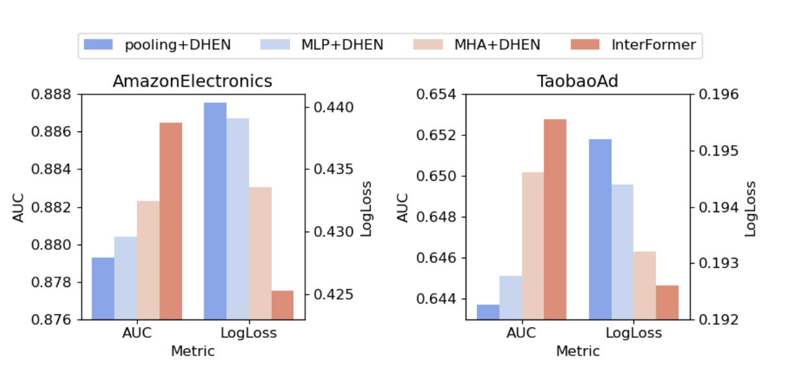
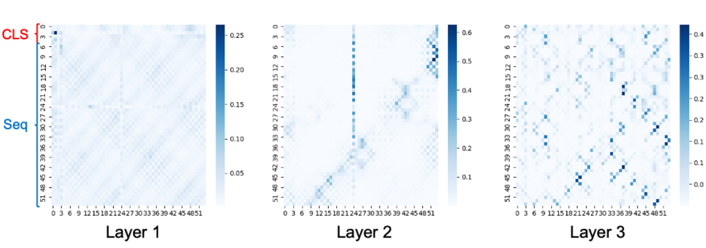
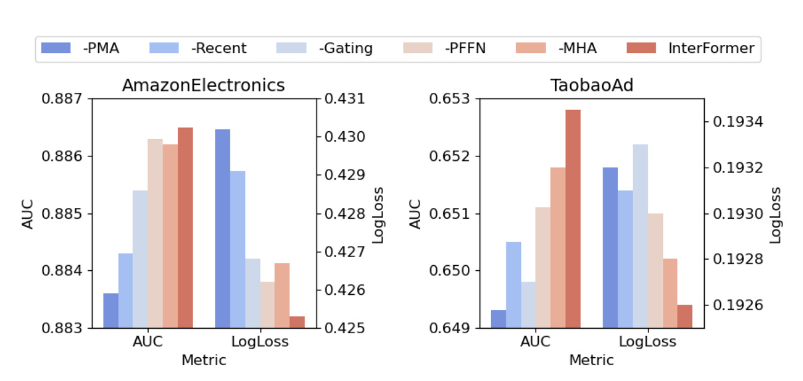
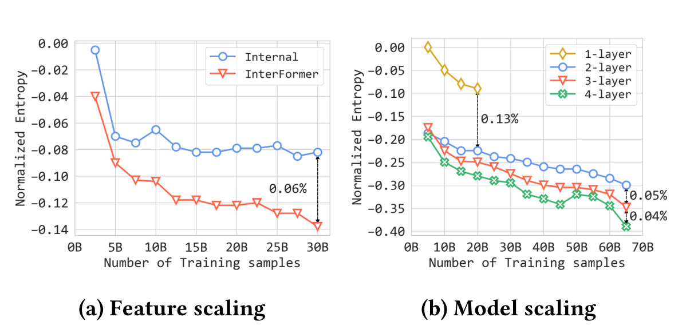

UIUC 的 Zhichen Zeng 等人与 Meta AI、UIC 合作者在 InterFormer: Effective Heterogeneous Interaction Learning for Click-Through Rate Prediction 中讨论 CTR 预估里一个很典型但常被简化的问题：真实广告排序模型同时吃非序列特征和行为序列，二者既不能简单拼接，也不能只让非序列上下文单向指导序列建模。论文已进入 CIKM 2025 proceedings，公开版本为 arXiv 2411.09852v4；本轮未核验到官方开源代码或项目页。阅读重点不是把 InterFormer 当成又一个 Transformer 变体，而是看它如何把“交互学习”和“信息摘要”拆成三条可堆叠的路径，让 sequence 与 non-sequence 两种 mode 在每一层里双向交换信息。
1. 背景和问题
CTR 预估的输入形态天然异构。一次广告点击预测通常不只看用户最近点过什么，还会同时看用户画像、广告素材、广告主、上下文、设备、场景、稀疏 ID、dense 数值特征以及多条行为序列。非序列特征给出相对静态的用户和物品上下文，例如用户长期兴趣、广告类别、价格、投放场景；行为序列则给出动态兴趣，例如用户突然连续浏览某类商品、最近转化或短期曝光反馈。前者更像当前 request 的结构化上下文，后者更像随时间变化的兴趣证据。工业 CTR 模型真正难的地方，正是这两类信息都重要，而且二者的统计形态、噪声结构、计算开销和适合的建模算子并不相同。
传统非序列 CTR 模型大多围绕 feature interaction 展开。FM、xDeepFM、AutoInt、DCNv2、DHEN、Wukong 等路线擅长在用户、物品和上下文字段之间建模显式或隐式交叉；它们可以通过内积、MLP、cross network、attention 或层级 ensemble 捕捉高阶特征组合。但如果行为历史只在早期被 pooling、拼接或压成若干统计特征，模型就很难感知用户兴趣随时间变化的细节。例如同样是“对电子产品感兴趣”的用户，最近连续看手机和三个月前偶尔看电脑配件在 CTR 上可能完全不同。只做非序列交叉会把动态兴趣当成静态 side feature，表达力受限。
顺序建模路线则从另一端补足这个问题。DIN、DIEN、BST、DMIN、DMR、TransAct 等模型会引入 RNN、attention、Transformer 或实时行为表征，让用户行为序列参与排序。但论文认为，大量 sequential CTR 方法仍然存在一个方向性偏差：它们常用非序列信息去指导 sequence learning，也就是让用户画像、目标 item 或上下文作为 query 去关注历史行为；反过来，序列信息如何更新非序列特征交叉却没有被同等重视。换句话说，很多模型承认“上下文能帮助理解行为序列”，却没有充分建模“行为序列也能改变上下文特征之间的交互方式”。如果用户最近的行为显著偏向某个品类，那么广告类别、用户长期兴趣和场景特征之间的交叉权重也应被动态调整。
论文把这个问题概括成两类瓶颈。第一类是 insufficient inter-mode interaction，即不同 mode 之间的信息流不足。非序列 mode 和序列 mode 不应该只是早期拼接或后期融合，而应该在多层结构里互相提供 query、summary 和交互信号。第二类是 aggressive information aggregation，即为了省计算而过早压缩信息。行为序列很长、非序列字段很多，直接做全量交互当然昂贵；但如果一上来就把序列平均池化、MLP 压缩或粗暴拼接，信息损失会先于深层建模发生，后续再复杂的 interaction module 也只能处理已经被削弱的表示。
InterFormer 的定位就是同时处理这两类瓶颈。它不把非序列和序列硬塞进同一个统一 token 序列里，也不让一个分支完全依附另一个分支，而是设计三条分工明确的路径：Interaction Arch 学 behavior-aware non-sequence embeddings，Sequence Arch 学 context-aware sequence embeddings，Cross Arch 负责在二者之间做有选择的信息摘要和交换。这种拆法的核心价值在于，它把“保留完整 mode 表示”和“只交换低维摘要”分开：每个分支内部保留足够细的信息，跨分支时再通过 gating、CLS、PMA 和 recent tokens 做选择性摘要。这样既避免全量高维交互的计算爆炸，也减少早期聚合带来的信息丢失。
从工程角度看，论文也不是只报告一个离线小数据提升。InterFormer 在 AmazonElectronics、TaobaoAds、KuaiVideo 三个公开数据集上与多类非序列和序列 baseline 对比，并在 Meta Ads 内部 70B 样本、数百个非序列特征、10 条长度 200 到 1000 的行为序列上部署评估。作者报告 3-layer InterFormer 相对内部 SOTA 在相近 FLOPs 下有 0.15% NE gain 和 24% QPS gain，2024 年 pilot launch 带来 0.6% topline metrics 改善。这里的信号很清楚：InterFormer 不是单点 benchmark trick，而是一个已经被工业系统验证过的异构 CTR 模块设计。
2. 方法
2.1 总体结构：三条路径和双向信息流
InterFormer 的任务仍然是标准 CTR prediction。给定用户集合 $\mathcal{U}$、物品集合 $\mathcal{I}$，用户 $u$ 的历史交互序列写成 $S^u=[i_1^u,i_2^u,\ldots,i_T^u]$，模型要估计用户对候选物品 $i_{T+1}$ 的点击概率：
这里 $y_{i_{T+1}}^u$ 是点击标签，$\theta$ 是模型参数，$f(\cdot)$ 输出 $[0,1]$ 内的点击概率。这个形式本身并不新，关键在于 $f$ 的输入不仅是序列 $S^u$，还包含大量 dense 与 sparse 非序列特征。优化目标使用 CTR 预估常见的交叉熵：
其中 $y$ 是真实点击标签，$\hat{y}$ 是模型预测概率。公开实验报告 AUC、gAUC 和 LogLoss，工业实验还报告 NE、QPS 和 MFU 相关结果。NE 可以理解为按训练集平均 CTR 熵归一化后的 LogLoss，适合比较不同背景点击率下的概率校准质量；在广告排序里，概率校准通常比单纯排序区分能力更贴近业务风险。

图 1 是 InterFormer 的核心。中间主干显示每一层都同时维护橙色的非序列分支和蓝色的序列分支，并通过绿色 Cross Arch 交换摘要信息。左侧放大了两个从非序列到序列的关键模块：Gating 从非序列特征中选出摘要 $X_{\mathrm{sum}}$，PFFN 用这个摘要生成个性化变换去作用于序列。右侧放大了从序列到非序列的摘要模块：MHA 产生 CLS token，PMA 产生可学习 query 驱动的摘要 token，recent tokens 保留最近行为，再通过 Self-Gating 得到 $S_{\mathrm{sum}}$。中间的 InterFormer Block 则说明这些信息不是只融合一次，而是在 layer 1 到 layer $L-1$ 中反复更新。这个图的重点不是“有三个模块”，而是三者的方向性：Interaction Arch 接收序列摘要来更新非序列交互，Sequence Arch 接收非序列摘要来更新行为序列，Cross Arch 专门负责摘要和降噪。
如果用信息流来描述，InterFormer 每层执行两类互补操作。第一，sequence-to-non-sequence：行为序列被摘要成 $S_{\mathrm{sum}}^{(l)}$，与非序列特征 $X^{(l)}$ 一起进入 interaction module，从而让非序列特征交叉变成 behavior-aware。第二，non-sequence-to-sequence：非序列特征被摘要成 $X_{\mathrm{sum}}^{(l)}$，作为 PFFN 和 MHA 的上下文，使序列编码变成 context-aware。两条路径都不是把对方完整高维输入搬过来，而是通过摘要 token 传递最有用的信息。
2.2 特征预处理：先保留 mode 内结构，再统一维度
非序列侧输入包含 dense features 和 sparse features。dense 特征例如用户年龄、价格或统计数值，先拼成向量 $x_{\mathrm{dense}}^{(0)}$，再通过线性变换得到 $d$ 维 dense embedding：
sparse 特征例如 user id、item id、category 等，先 one-hot 编码，再通过 embedding matrix 变成同样维度的向量：
随后模型把一个 dense embedding 和 $n$ 个 sparse embeddings 按 feature 维拼成非序列输入矩阵：
这里 $X^{(1)}$ 的每一列可以看作一个非序列 token 或 field embedding。注意论文没有在输入端就把所有非序列字段压成一个向量，因为后续 Interaction Arch 需要显式建模字段之间的交叉。如果早期就把它们平均或拼成单个 dense vector，高阶 feature interaction 的可解释结构和选择空间会被压缩掉。
序列侧也先保留时间维结构。每个历史交互 item 被映射到 $d$ 维 embedding，单条序列可写成：
真实系统往往不只有一条行为序列，而是有点击、转化、曝光、不同平台行为等多条序列。论文把 $k$ 条序列沿 embedding 维拼接后，使用 MaskNet 做自掩码过滤：
其中 $\odot$ 是 Hadamard product，$\mathrm{MLP}_{\mathrm{mask}}$ 学一个与输入同形状的 mask，$\mathrm{MLP}_{\mathrm{lce}}$ 再把多序列拼接后的 $kd\times T$ 表示压回 $d\times T$。这个步骤有两个作用：一是统一多条行为序列的维度，二是在进入深层模型前过滤明显噪声。它仍然保留 $T$ 个时间位置，没有把序列提前压成一个 summary。
2.3 Interaction Arch：让非序列交互感知行为摘要
Interaction Arch 解决的是 behavior-aware non-sequence interaction。非序列特征内部的交互是 CTR 模型的基础，例如用户画像与广告类别、广告价格与场景、用户长期兴趣与物品属性之间的关系；但这些交互不应固定不变，因为用户最近行为会改变目标 item 和上下文字段的重要性。InterFormer 因此把行为序列摘要 $S_{\mathrm{sum}}^{(l)}$ 拼到非序列输入 $X^{(l)}$ 上，再交给具体的 interaction module：
这里 $\mathrm{Interaction}^{(l)}(\cdot)$ 不绑定特定骨架，可以是 DOT product、DCNv2、DHEN 等。外层 $\mathrm{MLP}^{(l)}$ 用于把输出变换回与 $X^{(l)}$ 匹配的形状，使得多层堆叠时非序列 token 数和 embedding 维度能够保持稳定。这个设计的直觉很直接：非序列字段之间的交叉由 interaction module 学，但哪些交叉更重要、哪些字段组合需要被强调，可以被序列摘要动态调制。
从建模效果看，拼入 $S_{\mathrm{sum}}^{(l)}$ 后，Interaction Arch 同时学习三类关系。第一是非序列内部关系，例如 user profile 和 ad content 的显式匹配。第二是非序列与序列摘要之间的关系，例如目标广告与用户近期点击品类的相关性。第三是摘要 token 内部或摘要与字段之间的高阶关系，例如某类 recent behavior 只在特定场景和用户长期偏好下有效。相比“先把序列 pooling 成一个向量再与非序列拼接”，这里的差异在于 $S_{\mathrm{sum}}^{(l)}$ 是 Cross Arch 在当前层动态选择出来的摘要，而且 Interaction Arch 的输出会继续参与下一层交换。
这也是为什么论文强调 InterFormer 对不同 backbone 是兼容的。DOT、DCNv2、DHEN 的交互能力不同，但只要它们能接收 $[X^{(l)}\parallel S_{\mathrm{sum}}^{(l)}]$ 并输出可堆叠的 $X^{(l+1)}$，就可以成为 Interaction Arch。换言之，InterFormer 不是发明一个新的 feature crossing 算子替换所有 CTR 模型，而是提供一种把行为序列信息注入非序列交互的通用框架。
2.4 Sequence Arch：让序列编码感知非序列上下文
Sequence Arch 解决的是 context-aware sequence modeling。行为序列本身噪声很大，用户可能随手浏览、误触、短时兴趣漂移，也可能在不同平台和事件类型之间留下统计含义不同的行为。如果只在序列内部做 self-attention，模型可以学到时间依赖，却不一定知道当前 request 下哪些历史行为更相关。因此 InterFormer 用非序列摘要 $X_{\mathrm{sum}}^{(l)}$ 去指导序列分支。
核心模块之一是 Personalized FeedForward Network。给定当前层的非序列摘要 $X_{\mathrm{sum}}^{(l)}$ 和序列表示 $S^{(l)}$，PFFN 定义为：
其中 $f(\cdot)$ 是一个根据非序列摘要生成线性投影权重的 MLP。普通 Transformer FFN 对每个 token 使用共享参数，而 PFFN 的变换由当前用户、候选广告、上下文等非序列摘要决定。它的含义是：同一段行为序列在不同目标 item 或用户上下文下不应被同一种投影解释。例如用户最近看了耳机和手机，如果候选广告是手机配件，相关行为的表示变换应与候选广告是家电时不同。
随后模型用 MHA 建模序列内部关系。给定 query、key、value，attention 基本形式为：
多头版本写成：
InterFormer 的 Sequence Arch 可以概括为：
这里 $S^{(l+1)}$ 与 $S^{(l)}$ 保持同形状，避免在 Sequence Arch 内部过早把时间维压掉。论文还在进入第一层前把 $X_{\mathrm{sum}}^{(1)}$ prepend 到序列前作为 CLS token，使得后续 MHA 可以用非序列上下文作为查询入口聚合行为序列。这类似早期融合，但论文更偏向 append/prepend token，而不是直接 concat 成一个大向量，因为 token 化后 MHA 仍可保持位置结构和选择性注意力。
为了保留位置信息，论文使用 rotary position embeddings。这个细节在 CTR 场景里重要，因为行为序列不仅是 item 集合，还包含时序。用户最近一次点击、较早点击、连续点击簇和孤立行为的含义不同；MHA 如果完全忽略位置，会更像 set attention。RoPE 给序列 token 加入相对位置结构，使 PFFN 之后的序列表示能够在上下文感知的基础上继续建模长短期依赖。
2.5 Cross Arch：把摘要作为单独的学习问题
Cross Arch 是 InterFormer 最关键、也最容易被忽略的部分。它不直接学习最终 CTR，而是负责“从一个 mode 中选出足够小但足够有用的摘要，传给另一个 mode”。这种设计把两个目标分开：Interaction Arch 和 Sequence Arch 尽量保留各自 mode 的完整表示；Cross Arch 才负责低维交换。论文认为，这样可以同时避免信息交换不足和早期 aggressive aggregation。
非序列到序列的摘要使用 gated selection：
其中 $\mathrm{MLP}:\mathbb{R}^{d\times n}\rightarrow\mathbb{R}^{d\times n_{\mathrm{sum}}}$，且 $n_{\mathrm{sum}}\ll n$。也就是说，模型不是把所有非序列字段都作为 sequence query，而是先把大量字段压到少量摘要 token，再用 self-gating 做稀疏选择。$\sigma$ 可以是 sigmoid、tanh 或 identity 等激活。这个摘要 $X_{\mathrm{sum}}^{(l)}$ 一方面作为 PFFN 的条件，另一方面在第一层作为 CLS token prepend 到行为序列。
序列到非序列的摘要更丰富，包含三类 token。第一类是 $S_{\mathrm{CLS}}^{(l)}$，由 MHA 学到，代表带上下文的全局序列摘要。第二类是 $S_{\mathrm{PMA}}^{(l)}$，来自 Pooling by Multihead Attention：
$Q_{\mathrm{PMA}}$ 是可学习 query，它允许模型从多个角度抽取序列摘要，而不是只依赖一个 CLS token。第三类是 $S_{\mathrm{recent}}^{(l)}$，即最近 $K$ 个交互 token。recent tokens 很朴素，但在 CTR 里非常有效，因为最近行为通常包含强即时兴趣，也可能是线上排序最敏感的信号。三类 token 拼接后再经过 gating：
这个公式说明 Cross Arch 并没有把“序列摘要”简化为某一种 pooling。CLS token 偏全局上下文，PMA token 偏多角度可学习摘要，recent token 偏即时兴趣，self-gating 再负责过滤噪声。它们共同进入 Interaction Arch，让非序列字段交叉能够看到行为侧的动态证据。
2.6 分层执行流程和可堆叠性
把三个分支放在一起，每一层 InterFormer 的流程可以按附录算法理解。首先预处理 $X^{(0)}$ 与 $S^{(0)}$，得到 $X^{(1)}$ 与 $S^{(1)}$。然后计算初始非序列摘要 $X_{\mathrm{sum}}^{(1)}$，并把它 prepend 到 $S^{(1)}$ 前作为 CLS tokens。对每一层 $l=1,\ldots,L$，Cross Arch 先计算 $X_{\mathrm{sum}}^{(l)}$ 与 $S_{\mathrm{sum}}^{(l)}$；Interaction Arch 用 $X^{(l)}$ 和 $S_{\mathrm{sum}}^{(l)}$ 更新非序列表示 $X^{(l+1)}$；Sequence Arch 用 $S^{(l)}$ 和 $X_{\mathrm{sum}}^{(l)}$ 更新序列表示 $S^{(l+1)}$。最后模型把最终摘要拼接后输入 MLP 得到点击概率：
这个流程的一个重要特点是可堆叠。由于 Interaction Arch 输出仍是非序列矩阵，Sequence Arch 输出仍是序列矩阵，Cross Arch 的摘要也在每一层重新计算，InterFormer 可以像 block 一样加深。层数越深，非序列分支可以看到更高阶、更行为感知的 feature interaction；序列分支可以看到更多被上下文调制后的多尺度 attention；Cross Arch 则在每层重新选择哪些非序列字段和哪些行为摘要值得交换。
和很多“早融合”模型相比，InterFormer 的边界更清晰。早融合通常把序列摘要、目标 item 和上下文字段拼到一起，然后交给一个大模型；这种做法简单，但难以控制信息损失发生在哪一步，也难以解释为什么某类序列信号能反过来影响非序列交叉。InterFormer 则把 mode 内建模、跨 mode 摘要和最终预测分开，让每条路径承担明确职责。这种结构对工业模型尤其重要，因为 CTR 系统的非序列字段数量、序列长度、吞吐约束和分布漂移都很强，单纯追求统一结构未必是最稳的设计。
3. 实验结果
3.1 数据、baseline 和指标
公开实验使用三个数据集：AmazonElectronics 有 3.0M 样本、6 个特征，其中 2 个序列特征和 4 个非序列特征，序列长度 100；TaobaoAds 有 25.0M 样本、22 个特征，其中 3 个序列特征和 19 个非序列特征，序列长度 50；KuaiVideo 有 13.7M 样本、9 个特征，其中 4 个序列特征和 5 个非序列特征，序列长度 100。论文使用 BARS 评测框架，Adam 优化器，batch size 2048，公开实验在 A100 上训练，工业实验在 H100 上进行。
baseline 覆盖 11 类主流方法。非序列方法包括 FM、xDeepFM、AutoInt+、DCNv2、FmFM、DOT、DHEN、Wukong；序列方法包括 DIN、DIEN、BST、DMIN、DMR、TransAct。论文默认用 DHEN 作为 Interaction Arch，但也在分析实验中换成 DOT 和 DCNv2 证明框架兼容性。指标包括 gAUC、AUC、LogLoss 和参数量；工业数据再看 NE、QPS、MFU、训练样本规模和层数 scaling。

表 3 给出主结果。InterFormer 在 AmazonElectronics 上达到 gAUC 0.8843、AUC 0.8865、LogLoss 0.4253，在三项质量指标上整体优于所有 baseline；其中 DIEN 的 Amazon LogLoss 为 0.4276，TransAct 的 AUC 为 0.8851，InterFormer 相比最强序列模型仍有提升。TaobaoAds 上，InterFormer 的 gAUC 0.5728、AUC 0.6528、LogLoss 0.1926，也优于 DMIN、DIEN、DHEN 等强 baseline。KuaiVideo 上，InterFormer 的 AUC 0.7453、LogLoss 0.4340 最优，gAUC 0.6637 略低于 DIEN 的 0.6651，但整体仍是最强或接近最强。这个表最值得注意的是，InterFormer 的优势不是只打败非序列模型，而是在 DIN、DIEN、BST、DMIN、DMR、TransAct 等已经利用行为序列的模型上继续提升，说明收益来自更充分的异构交互，而不是简单“加了序列分支”。
3.2 双向 interleaving 是否真的有用
论文为 interleaving learning style 设计了五种对照：sole 只使用 Interaction Arch，序列信息在早期被朴素聚合；sep 禁用 inter-mode interaction，Sequence Arch 和 Interaction Arch 分别学习；s2n 只启用 sequence-to-non-sequence 信息流；n2s 只启用 non-sequence-to-sequence 信息流；int 启用双向信息流，即完整 InterFormer。这个对照很干净，因为它把“有没有序列模型”和“有没有双向交换”拆开了。

图 2 显示，无论 Interaction Arch 的 backbone 是 DOT、DCNv2 还是 DHEN，性能大体都呈现 $sole
3.3 选择性摘要是否优于早期聚合
第二个分析关注 aggressive aggregation。作者把序列信息在早期分别用 average pooling、MLP、MHA 压缩，然后与非序列特征交给 DHEN，对比完整 InterFormer 的 selective aggregation。这个实验回答的是：如果最终都要把序列信息送进 interaction module，为什么不能先压一下？论文的回答是，压缩时机和压缩方式会决定可用信息上限。

图 3 中，InterFormer 在 AmazonElectronics 和 TaobaoAd 上都优于 pooling+DHEN、MLP+DHEN、MHA+DHEN。可以看到 average pooling 最弱，因为它几乎不区分哪些历史行为对当前 request 有用；MLP 稍好，但仍像固定压缩器；MHA 更接近选择性摘要，但如果早期就把序列压成低维摘要，后续层也失去了继续更新完整序列表示的机会。InterFormer 的区别是，Sequence Arch 保留完整序列表示，Cross Arch 每层生成 $S_{\mathrm{CLS}}$、$S_{\mathrm{PMA}}$ 和 $S_{\mathrm{recent}}$ 后再 gating。换句话说，它不是“永远不摘要”，而是“把摘要从早期不可逆压缩改成每层可学习、可交换的独立模块”。这解释了为什么同样使用 MHA 思路，完整 InterFormer 仍明显优于早期 MHA 聚合版本。
论文还用注意力图观察序列建模行为。作者在 TaobaoAds 上可视化三层 MHA，前 4 个 token 是 CLS tokens，后面是长度 50 的行为序列。

图 4 的模式说明不同层承担不同尺度的选择。第一层注意力比较均匀，更像在宽范围内做 long-term interest pooling；第二层开始对特定 token 形成明显关注，例如右侧 recent tokens 和第 24 个 token；第三层出现更强的局部簇结构，表示模型在较小范围内抽取短期或局部模式。这个现象和 InterFormer 的设计一致：PFFN 让序列表示先被非序列上下文调制，MHA 再根据上下文选择不同位置，层数增加后从粗粒度聚合走向细粒度关注。如果直接在输入端把序列池化掉，这种层级关注结构就无法出现。
3.4 模块消融和每个组件的贡献
InterFormer 的模块较多，因此论文进一步消融 PMA tokens、recent tokens、gating、PFFN 和 MHA。这里的重点不是单个组件都带来巨大提升，而是各组件对应不同信息通道：PMA 提供可学习的多角度序列摘要，recent tokens 保留即时兴趣，gating 负责过滤噪声，PFFN 让序列表示被非序列上下文个性化变换，MHA 建模序列内部依赖。

图 5 显示，去掉这些模块都会伤害 AUC 或 LogLoss，尤其 PMA 和 gating 的影响比较明显。论文文字指出，PMA tokens 对序列摘要很重要，去掉后 AUC 最高下降约 0.004；gating 模块也能贡献最高约 0.003 AUC improvement。这个结果符合直觉：InterFormer 的跨 mode 交换依赖摘要质量，如果摘要 token 只剩 recent 或 CLS，模型会损失多角度选择能力；如果没有 gating，噪声行为和不相关非序列字段更容易进入对方分支。PFFN 和 MHA 的消融则说明 Sequence Arch 不是可有可无，非序列上下文条件化的变换和序列内部 attention 都在共同提高序列表示质量。
3.5 工业数据、可扩展性和线上影响
工业实验使用 Meta 内部大规模数据，包含 70B 样本、数百个非序列特征和 10 条长度 200 到 1000 的行为序列。论文报告，在相近 FLOPs 下，3-layer InterFormer 相比内部 SOTA 有 0.15% NE gain 和 24% QPS gain。NE gain 对广告 CTR 模型不是小事，因为它直接对应点击概率校准质量；QPS gain 则说明这个架构并没有单纯用更高延迟换精度。作者还报告加入更大规模 sequence features 后 NE 可以进一步改善 0.14%，并且在合并 6 条长度 100 的序列为一条长度 600 的序列时，能获得 QPS +20%、MFU +17%，代价是 0.02% NE tradeoff。

图 6 左侧比较 feature scaling：随着训练样本从几 B 增加到 30B，InterFormer 的 NE 曲线持续下降，并相对内部 baseline 保持更低 NE，标注差距约 0.06%。这说明 InterFormer 在更多样本和更大序列特征规模下没有快速饱和。右侧是 model scaling：从 1-layer 到 4-layer，NE 持续改善。相比单层 InterFormer，两层带来 0.13% NE gain，三层和四层分别继续带来 0.05% 和 0.04% gain。这个曲线很重要，因为它说明 InterFormer block 的可堆叠性不是形式上的；每层重新做 Cross Arch 摘要、Interaction Arch 和 Sequence Arch 更新，确实能把更多模型深度转化为更好校准。
论文还讨论了 model-system co-design。Interaction Arch 中的 DHEN 参数重、计算相对轻，在分布式训练里容易 FSDP communication-bound；Sequence Arch Transformer 计算密度更高，通常更 computation-bound。InterFormer 把 Interaction Arch 和 Sequence Arch 并行设计后，可以让 DHEN 的通信开销与 sequence computation 重叠，带来 20% QPS improvement。作者还通过把 FLOPs 从小而低收益的模块重新分配到更高 ROI 的大模块、合并小 kernel 提高 GPU 利用率，把 interaction modules 的 MFU 从 11% 提到 16%，DHEN 从 38% 提到 45%，整体 InterFormer layer 的 MFU 提升 19%。这些系统结果解释了为什么论文能同时报告质量和吞吐提升：它不是简单加复杂模块，而是利用两条分支的计算/通信差异做重叠。
线上影响部分相对克制。论文说 InterFormer 已部署在 key Ads models，包括 largest ones，并在 2024 年 pilot launches 中带来 0.6% topline metrics improvement。这里没有展开线上实验设计、置信区间、流量分桶或长期稳定性，因此外部读者不能把 0.6% 直接外推到其他业务。但这个结果至少说明 InterFormer 的异构交互设计在 Meta Ads 内部不是离线想法，而是经历了工业链路中的吞吐、训练、部署和在线指标考验。
4. 总结
4.1 我的判断
InterFormer 的核心贡献，是把 CTR 异构建模里的“序列”和“非序列”关系从单向指导改成双向互利。非序列字段并不只是候选 item 的上下文，它们能作为 query 和条件去解释行为序列；行为序列也不只是被关注和池化的历史，它能反过来改变非序列字段之间的交互。论文把这个想法落在 Interaction Arch、Sequence Arch 和 Cross Arch 三个模块上，设计上比简单拼接更清晰，也比纯 sequence-only 推荐模型更贴近广告排序的真实输入。
从方法角度，我认为最值得借鉴的是 Cross Arch。很多推荐模型会在早期为了省计算做 summary，但 summary 一旦过早、过粗，后续模型就只能在损失后的信息上工作。InterFormer 的处理方式更稳：mode 内部先保留完整结构，跨 mode 只交换经过 gating 的低维摘要，而且每一层都重新计算摘要。这给工程实现一个很有价值的原则：不是所有信息都要全量交互，但摘要本身必须是可学习、分层和上下文相关的。
4.2 工程启发与复现建议
如果要在自己的 CTR 或推荐排序系统中借鉴 InterFormer，我会先检查三件事。第一，当前模型是否只允许非序列到序列的单向流动；如果是，可以尝试把序列摘要接回 feature interaction 模块，让近期行为影响字段交叉。第二，当前序列摘要是否过早发生；如果输入端已经把长序列平均池化或只取一个 attention pooling 向量，应该评估保留完整序列表示并按层摘要的收益。第三，摘要 token 的类型是否单一；CLS、PMA、recent token 各自覆盖全局、多兴趣和即时行为，缺任何一个都可能让模型偏向某类兴趣。
复现时不要只复刻图 1。公开数据上可以从 DHEN 或 DCNv2 backbone 开始，把 $S_{\mathrm{sum}}$ 拼入 interaction input，再用 $X_{\mathrm{sum}}$ 条件化 sequence branch；但工业落地还要同时测 QPS、MFU、通信开销和模型延迟。论文的一个隐含经验是，两条分支的计算形态不同，合理并行后能用通信/计算重叠换吞吐。如果只在单卡小数据上看 AUC，可能低估或误判 InterFormer 的系统价值。
4.3 局限与风险
这篇论文的局限主要有四点。第一，工业数据和线上实验不可复现，70B 内部数据、Meta Ads 特征体系和线上 topline 指标都无法外部验证。第二，公开实验虽然覆盖三类数据集，但绝大多数核心业务价值来自内部结果，公开 benchmark 与真实广告排序之间仍有差距。第三，InterFormer 模块较多，PMA、recent、gating、PFFN、MHA、interaction backbone 的组合会引入较大的调参空间，工程团队若没有足够监控，容易把收益归因到错误模块。第四，论文未核验到官方开源实现，尤其是与内部并行、FSDP 通信重叠和 kernel 合并相关的优化很难完全复刻。
4.4 后续跟进
后续我会重点看三条线。其一，InterFormer 与 Kunlun、Wukong、DHEN、TransAct 等工业 CTR 架构之间是否能形成统一 design space：哪些模块负责非序列交叉，哪些负责序列建模，哪些负责跨 mode 摘要。其二，Cross Arch 的摘要策略是否能更自动化，例如根据请求、事件类型、序列长度或目标广告动态选择 CLS/PMA/recent token 数量。其三，双向 inter-mode interaction 是否能与更大的推荐 scaling law 结合起来，解释为什么某些序列特征扩展能持续降低 NE，而另一些只是增加延迟。InterFormer 给出的答案还不是最终形态，但它把一个关键问题说清楚了：CTR 模型要真正用好异构信息，不能只问“序列怎么建模”，还要问“序列和非序列如何反复交换、选择和更新”。